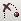

The user interface of the Illustrated Parts Catalog (IPC) consists of two workspaces: 3D window or 2D window and Detailed Parts List (DPL) table. Each workspace has its own control elements described below.
The 3D window displays 3D graphics of the current sheet. You can navigate the camera using the mouse or keyboard and specify a navigation mode using the Navigation bar. A locator (axis tripod) in the top right corner of the 3D window allows determining the orientation of the 3D graphics relative to the axes.
The 2D window displays vector and raster graphics associated with the current sheet.
| Command | Button | Purpose |
|---|---|---|
| Sheet | Allows you to choose the detail sheet from a list of available detail sheets. | |
| Reset |
|
Restores the original (user-defined) view on the current sheet. |
| 2D Graphics | Allows switching between 2D window and 3D window. Enables/disables the 2D Graphics mode. The button appears only in the 2D and 3D graphics viewing mode. | |
| Print Graphics | Allows you to print the current 3D/2D graphics as displayed in the 3D/2D window. | |
| Callouts (for 3D window) | Enables/disables the Callout mode that allows drawing callouts over the current image in the 3D window. When the Callout mode is enabled, the Navigation bar is replaced with the Callout bar. | |
| Ignore Transparent (for 3D window) |
|
Allows you to click through the transparent graphics in the 3D window. If enabled, makes the transparent graphics insensitive for the user's click. |
| Skip Animation (for 3D window) |  | Allows you to avoid a smooth transition (animation) from one sheet to another and makes the transition between the sheets abrupt. |
| Show Graphics Only |
|
Hides the DPL Table window and enlarges the 3D/2D window to full screen. |
Buttons for controlling the navigation modes in the 2D window depend on the 2D viewer used in the 2D window.
Buttons for controlling the navigation modes in the 3D window.
| Command | Button | Purpose |
|---|---|---|
| Spin | Allows you to rotate the image around a specified center in the 3D window. | |
| Pan |
|
Allows you to reposition the image on the screen. |
| Zoom in/out |
|
Allows you to move the image closer or further away from the user. |
| Set Center | Allows you to specify the rotation center for the image. | |
| Show/Hide Rotation Center |
|
Allows you to hide or show the rotation center. |
| Fit |
|
Makes the entire 3D graphics fully visible in the 3D window. The image moves to fit the bounding box of the 3D window. |
There are several navigation modes that allow fitting the 3D graphics item(s) to the 3D window from the specified position:
| Command | Button | Purpose |
|---|---|---|
| Front | Shows the image from the front. | |
| Back |
|
Shows the image from the back. |
| Left |
|
Shows the image from the left side. |
| Right | Shows the image from the right side. | |
| Top | Shows the image from the top. | |
| Bottom |
|
Shows the image from the bottom. |
| Isometric |
|
Shows the image from the front left looking aft. |
Replaces the Navigation bar in the Callout mode (the Callouts button is pressed). The mode allows drawing callouts over a snap-shot of the 3D window. The resulted image can be printed. Navigation is unavailable in the Callout mode.
| Command | Purpose |
|---|---|
| Callout Text | Allows typing a text for a new callout. |
| Undo | Removes the last callout drawn. |
Allows fitting, showing, hiding and making transparent the selected 3D graphics item in the 3D window.
| Command | Purpose |
|---|---|
| Fit | Moves the image to fit the bounding box. |
| Show | Shows the selected 3D image in the 3D window. |
| Hide | Hides the selected 3D image in the 3D window. |
| Transparency | Sets the desired amount of transparency for the selected part. |
Displays the DPL table.
| Command | Button | Purpose |
|---|---|---|
| Print Table | Allows you to print the DPL table. | |
| Composite Print |
|
Allows you to print both the DPL table and all 2D images available in the IPC module. Each 2D image is printed out on a separate page. |
| Check Boxes (for 3D window) |
Shows or hides the Check Boxes column of the DPL table.
The Check Boxes column is a column with tick boxes.
|
Full Table | Shows the entire DPL table. The text of the rows that are not associated with the current sheet (inactive rows) is gray in color. | Export to Excel |
|
Puts the selected parts in a Microsoft Excel spreadsheet. If no parts are selected in the DPL Table, all visible parts are placed in Microsoft Excel spreadsheet. | Help | Provides a help system for the user interface. | Title area | The Title area provides information about the project name and published date. |
Right-click any 3D graphics item in the 3D window or a DPL row in the DPL Table to access the context-sensitive menus.
| Menu Item | Purpose | Item: | Shows the Item number for the selected 3D image and DPL row. | Fit | Moves the image to fit the bounding box of selected 3D graphics item to the 3D window. | Show/Hide |
Shows or hides the selected 3D image in the 3D window.
|
Select/Unselect | Selects or unselects the chosen 3D image in 3D window or the chosen DPL row in the DPL table. | Go to Sheet {Sheet name} | Shows all available transitions to the other detail sheets. The Sheet name in bold indicates a sheet that provides the best view for the 3D image represented by the DPL row. The current Sheet is marked as active in brackets. |
|---|---|
| Show All | Shows all hidden 3D images in the 3D window and selects the corresponding check boxes in the DPL Table. | Cortona Properties (in 3D window) | Allows you to select a rendering mode. The Cortona3D Viewer is used in the application and it provides a software renderer and two hardware renderers: OpenGL and DirectX. If your system has hardware acceleration for either OpenGL or Direct3D, choose the appropriate renderer. Using hardware renderers can introduce limitations. Select a renderer to compare the performance and visual quality of hardware versus software rendering and set your preferences accordingly. |
| About | Shows the versions of the IPC document, Cortona3D Viewer and 2D viewer. This menu item is also available in the 2D window. |
| Procedure Name | Procedure | Result | Highlighting | Point to the required DPL row. |
The DPL row is highlighted in light gray, if its corresponding 3D image is illustrated in the 3D window.
The corresponding 3D image is also highlighted in the 3D window.
|
Selection | Click the required DPL row. | The DPL row and the corresponding 3D/2D graphics are highlighted in yellow. | Multiple Selection | Press and hold down CTRL, and then click each required DPL row. | The DPL rows are selected one by one. | Consecutive Multiple Selection | Click the first DPL row, press and hold down SHIFT, and then click the last DPL row. | The consecutive DPL rows are selected. | Fit | Double-click the required DPL row. | Moves the image to fit the bounding box of the 3D window. | Show | Select the check box (Check Boxes column) of the required DPL row to make the corresponding 3D image visible in the 3D window. | The corresponding 3D image is shown in the 3D window. | Hide | Clear the check box (Check Boxes column) of the required DPL row to make the corresponding 3D image invisible in the 3D window. | The corresponding 3D image is hidden in the 3D window. |
|---|
Callouts in the 2D window are interactive hotspots that allow for linking between the 2D graphics and DPL table. The navigation commands depend on the 2D viewer used in the 2D window.
| Procedure Name | Procedure | Result | Highlighting | Point to the required callout. | The callout and the corresponding DPL row are highlighted. The Item number is displayed as a popup for the highlighted callout. | Selection | Click the required callout. | The callout and the corresponding DPL row are highlighted in yellow. |
|---|
| Procedure Name | Procedure | Result | Highlighting | Point to the required 3D image. | The 3D image and the corresponding DPL row are highlighted. The Item is displayed as a popup for the highlighted 3D image. | Selection | Click the required 3D image. | The 3D image and the DPL row are highlighted in yellow. | Multiple Selection | Press and hold down CTRL, and then click each required 3D images. | The 3D images are selected one by one. | Hierarchy Selection (in case of hierarchic structure) | Click the required 3D image and then click it once more while holding the SHIFT key, repeat clicking the 3D image with SHIFT pressed until all required upper levels of hierarchy are selected. |
The 3D images of the next level up in the hierarchy are highlighted in the 3D window and DPL table.
|
Zoom (navigation) |
– or – |
The image moves closer or farther away in the 3D window. | Pan (navigation) |
– or – |
The image moves up/down or left/right in the 3D window. | Spin (navigation) | Click the Spin button on the Navigation bar, position the pointer over 3D window, and move the mouse while holding down its left button. | The image rotates around the specified center in the 3D window. | Setting Rotation Center (navigation) |
– or – – or – |
The rotation center of the chosen 3D image is specified. | Fit 3D Graphics Marked in the Current DPL table |
Click the |
The 3D images, corresponding to rows with selected check boxes, are fully visible in the 3D window. | Fit Selection | Select the required 3D image in the 3D window or DPL table, and then click the Fit button on the Selection bar. | The image moves to fit the bounding box of selected 3D image to the 3D window. | Fit 3D Graphics from Specified Position |
Click the required button ( Front, |
The 3D images, corresponding to rows with selected check boxes, are shown in the 3D window from the specified position (Front, Back, Left, Right, Top, Bottom, and Isometric). | Show |
Select the DPL row of the hidden 3D image or DPL table, and then click the Show button on Selection bar.
|
The hidden 3D image is shown in the 3D window. | Hide | Select the required 3D image in the 3D window or DPL table, and then click the Hide button on the Selection bar. | The selected 3D image is hidden in the 3D window. | Setting Transparency/Opacity | Select the required 3D image in the 3D window or DPL table, and then drag the Transparency slider on the Selection bar, until the desired effect is achieved in the 3D window. | The selected 3D image is made transparent or opaque in the 3D window. | Print 3D with Callouts |
|
The chosen 3D image is printed with the drawn callouts. |
|---|